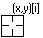
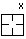
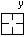
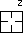
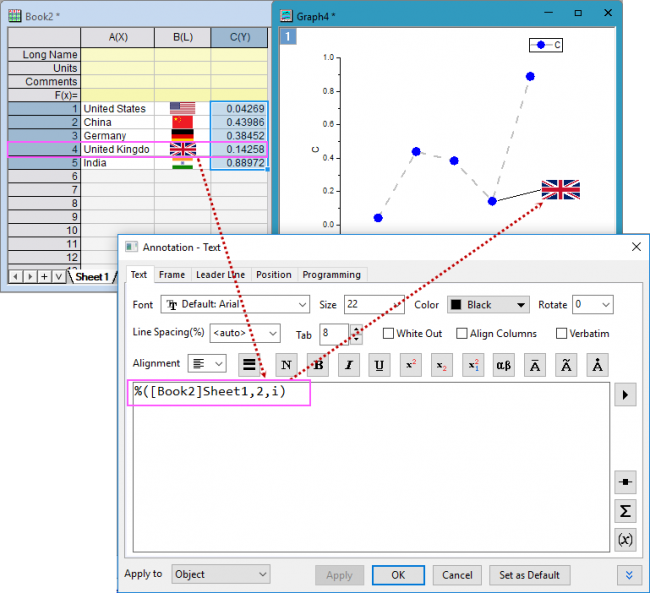

Informationen zum globalen Beschriften von 2D-Diagrammen (auch Beschriften von einzelnen Datenpunkte) finden Sie unter Diagramme mit Hilfe der Registerkarte Beschriftung oder den Minisymbolleisten beschriften.
Zum genauen Auswählen und Beschriften von spezifischen Punkten in 2D- und Konturdiagrammen können Sie das benutzerdefinierbare Tool Anmerkung verwenden.
Eine andere Methode, um Datenpunkte selektiv zu beschriften, ist die Verwendung der Bedienelemente im Dialog Details Zeichnung unter Nur bei festgelegten Punkten zeigen. |
dotool 100 verwenden, um das Hilfsmittel Anmerkung im Diagramm zu aktivieren.
2D-XY-Datenzeichnungen:
| Anmerkungsform | Cursor |
|---|---|
| ($(x), $(y)) oder andere benutzerdefinierte Form | |
| (X-Koordinatenwert, Y-Koordinatenwert) | |
| (X-Koordinatenwert, Y-Koordinatenwert) [Indexnummer] |  |
| X-Koordinatenwert |  |
| Y-Koordinatenwert |  |
| Indexnummer (Zeilennummer) |
Konturdiagramme:
| Anmerkungsform | Cursor |
|---|---|
| ($(x), $(y), $(z)) oder andere benutzerdefinierte Form | |
| (X-Koordinatenwert, Y-Koordinatenwert, Z-Koordinatenwert) | |
| (X-Koordinatenwert, Y-Koordinatenwert, Z-Koordinatenwert) [Zeilenindexnummer] | |
| (X-Koordinatenwert, Y-Koordinatenwert, Z-Koordinatenwert) [Zeilenindexnummer] [Spaltenindexnummer] | |
| X-Koordinatenwert | |
| Y-Koordinatenwert | |
| Z-Koordinatenwert |  |
| Indexnummer (Zeilennummer) | |
| (Indexnummer (Zeilennummer), Indexnummer (Spaltennummer)) |
Wenn Sie einen Datenpunkt in einer Datenzeichnung markiert haben, können Sie auf die Datenzeichnung klicken und auf der Tastatur auf ← und → drücken, um den gewünschten Datenpunkt auszuwählen. |
Wenn Sie auf die Schaltfläche Anmerkung  geklickt haben, wird ein Minidialog Anmerkung gezeigt, über den Sie ein Beschriftungsformat wählen und die Stile der Beschriftungen festlegen können.
geklickt haben, wird ein Minidialog Anmerkung gezeigt, über den Sie ein Beschriftungsformat wählen und die Stile der Beschriftungen festlegen können.

Um eine vorhandene Anmerkung benutzerdefiniert anzupassen, können Sie die Minisymbolleiste oder den Dialog Eigenschaften verwenden:

Klicken Sie mit der rechten Maustaste auf die Beschriftung und wählen Sie Eigenschaften. Der Dialog Anmerkung wird geöffnet:

Zusätzlich zu den Standardanmerkungen und der vordefinierten benutzerdefinierten Anmerkung in der Liste können Sie eine einzelne benutzerdefinierte Anmerkungszeichenkette hinzufügen, die beliebigen Text und LabTalk-Variablen im Feld Beschriftung einbinden kann, und dann die Anmerkung hinzufügen. Oder Sie können zuerst eine Standardanmerkung hinzufügen und dann mit der rechten Maustaste auf sie klicken, um den Dialog Anmerkung zu öffnen und den Beschriftungsinhalt auf der Registerkarte Text benutzerdefiniert anzupassen.

In diesem Beispiel verwenden wir im Dialog Achsen das Feld Formel, um eine benutzerdefinierte Hilfsstrichsbeschriftung zu erstellen, und passen dann das Anmerkungshilfsmittel benutzerdefiniert an, um den "Formel"wert anstatt des tatsächlichen Werts der Y-Achse anzuzeigen:
x*pi im Feld Formel ein und klicken Sie auf OK. Beachten Sie, dass die Hilfsstrichsbeschriftungen der Y-Achse jetzt angepasst sind, um gemäß Ihrer eingegebenen Formel alles richtig anzuzeigen.$(x), $(y,y) ein und klicken Sie auf die Schaltfläche Als Standard festlegen, bevor Sie mit OK den Dialog schließen. Beachten Sie, dass die Beschriftung jetzt den mit der Formel berechneten Wert der Y-Achse richtig anzeigt. Falls Sie die Beschriftung im Beschriftungsformat der großen Hilfsstriche auf der Y-Achse zeigen möchten, können Sie $(x), $(y,yt) eingeben.Neben dem Versehen der Punkte mit Anmerkungen über Zellwerte oder Zeichenketten können Sie auch eingebettete Bilder als Anmerkungsbeschriftungen zeigen. 
Beschriftungen, die mit dem Anmerkungstool erstellt wurden, sind Textobjekte, die Substitution verwenden, um einen numerischen Wert, eine Textzeichenkette oder ein eingebettetes Bild anzuzeigen. Damit unterstützen sie benutzerdefinierte Anpassungen über die hier dargestellten hinaus. Weitere Informationen finden Sie unter Notations and syntax used in labeling plotted data und Text Label Substitution, beide in der Anleitung zur LabTalk-Programmierung. |